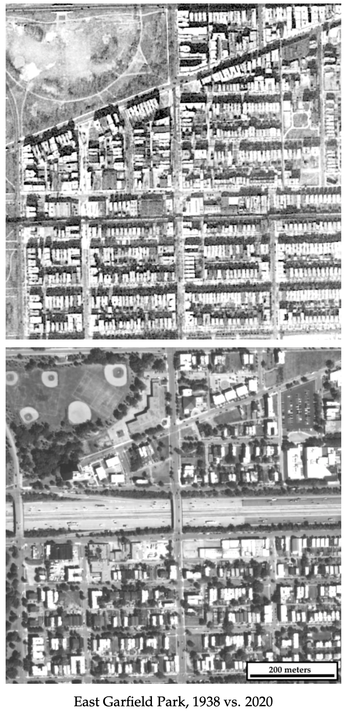

Work in Progress
The (Express)Way to Segregation: Evidence from Chicago
I investigate how man-made barriers shape racial segregation within cities. I exploit the construction of expressways in Chicago in the 1950s as a source of variation in neighborhoods’ quality and connectivity. Central to the analysis is the consideration that these multi-lane roads (i) produce a local shock to residential amenities, and (ii) divide the areas they cross through, by creating local barriers to the interaction of nearby communities. I begin by documenting the effect of proximity to expressways on racial sorting, running difference-in-differences specifications with multiple time periods. I find that on average the share of black residents permanently increases in areas close to the expressways. At the same time, house values and residential population shrunk. These results are consistent with a resorting of people in response to changes in relative amenity values. Then, I estimate the barrier effect of expressways on opposite sides of the lanes, running a spatial neighborhood matching over time. By increasing the physical separation between different portions of the city, I find that expressways create a discontinuity along a racial dimension that is however not accompanied by an analogous discontinuity in house prices. The results suggest that this feature of expressways provides a second channel of racial sorting which depends on individual preferences towards more or less integrated places to live in. Motivated by these findings, I develop a discrete choice model of residential sorting that quantifies the relative importance of racial preferences in location choice.

The Fastest Route to Specialization? Evidence from the Expansion of the Italian Highway System
I analyze the effects of a large public investment in transportation infrastructure on the industrial structure of local economies in modern Italy. In 20 years, between 1955 and 1975, more than 5,000 km of highways were laid on the peninsula, making the Italian highway network the third longest worldwide at that time. The network was, however, disproportionate in relation to national income and consumption levels and came as a shock to many localized environments. The setting is used to investigate how changes in transportation costs affect the degree of industrial specialization of Italian municipalities. I show that proximity to highways is associated with a sizable and persistent decrease in the degree of industrial specialization, both in aggregate and separately among traded and non traded sectors. The results also show that the decrease is mainly driven by a reallocation of employment shares between sectors of the economy, rather than by an extensive margin effect through the creation of new sectors in the economy.

Railroads, Location Fundamentals, and the Growth of Cities: Evidence from 19th Century Canada
I exploit the immigration to the Canadian Prairies at the turn of the 20th century to investigate what are the determinants of the distribution of economic activity across space. How do location fundamentals and market access interact to shape the pattern of settlement and the growth of cities? In what ways do ethnic agglomerations develop to mark the success of an area? Relying on a unique novel panel dataset linking population patterns, soil characteristics, and access to markets at a finely granular spatial level, this setting is also suitable for drawing conclusions over the long run. To what extent do initial conditions and history matter in explaining differences in economic activity today?

Other Publications
Atlantia
with G. Rolnik and S. Feltri. Stigler Center Case Study n. 6, June 2020
During a torrential rainstorm on August 14, 2018, a 210-meter (690 ft) section of the Ponte Morandi bridge collapsed. The Ponte Morandi, also known as the Genoa Bridge, forms a critical artery of European route E80 linking Italy and France. In the collapse, between 30 to 35 cars and three trucks were reported to have fallen from the bridge. The disaster caused a major political controversy about the poor state of infrastructure in Italy and the privatization of Italy?s highways. The Genoa Bridge was part of a motorway system operated by Autostrade, a subsidiary of the Atlantia holding company controlled by the Benetton Family, one of the most powerful family business dynasties in Italy. The media crisis and political storm that followed threatened the concession under which Autostrade operated the motorways in Italy.